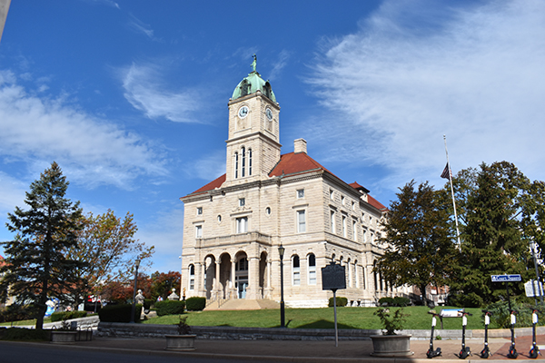

Located in the valley of the Shenandoah Mountains, Harrisonburg is known mostly as a college hub, however it is also known for the agricultural and hiking community in and around the town. Harrisonburg, being a part of the valley, makes up 2/3rds of Virginia's agriculture. In the past few years, Harrisonburgs population has been growing about 1,000 families per year.

Being so close to the Shenandoah Mountains, Harrisonburg has a big hiking and backpacking community. Some people will travel 4 hours to come hike in the trails near Harrisonburg. There are trails for every kind of hiker, whether you like rock scrambles or waterfalls.